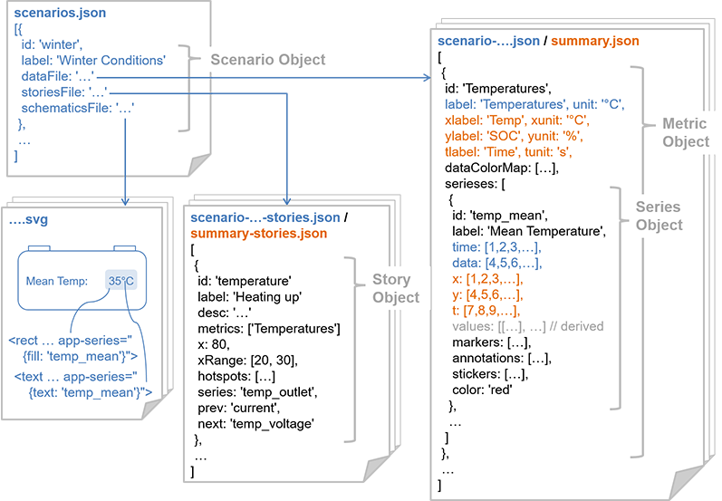

DAND6 JSDoc
DAND6 JSDocThis chapter is especially useful for engineers who would want to re-purpose the visualization application to show other, custom battery data. It may also be re-used for completely different purposes. The following definitions serve as a specification about which JSON and SVG files inside of the /data directory the visualization application can handle.
It is important to realize that both explanatory and exploratory visualization use the same data format. However, they are stored in different files and at some positions, one may contain some values which the other
does not.
The following picture shows the different files (in bold) that are to be stored in /data and their relationship to each other. Filenames are written in bold, elements/files specific only to explanatory view in orange, elements/files specific only to exploratory view in blue.

For the explanatory visualization there are two files:
summary.jsoncontaining the explanatory visualization data (one single Metric object with three Series Objects, one for each driving situation)summary-stories.jsoncontaining the stories accompaining the explanatory visualization.
For the explorative visualization there are usually more files:
- One central
scenarios.jsonfile containing all Scenario objects, where each one references one of the following files: scenario-<scenarioId>.jsonthat, in a similar way tosummary.json, contains the visualization data. Again, data is organized into multiple Metrics and from there into multiple Series(es).scenario-<scenarioId>-stories.jsonwhich contains all the stories for one single scenario.<battery>.svgrepresenting a schematic drawing of a battery that will be shown alongside with the scenario. This drawing can be designed in a standard SVG drawing tool and annotated with the special attributeapp-seriesin order to make single shapes react dynamically to the user-selected value.
The following sections go into deep-level technical detail about the individual JSON properties used in the data structure.
Properties of Scenario Objects
id(string): machine-readable ID that this scenario is referenced to. ID will be used in the URL asscenarioIdURL-parameter.label(string): human-readable label of this scenario - will be displayed on scenario selection dropdown.dataFile(string): reference to the file containing metric & series data (filename relative to/datadirectory).storiesFile(string): reference to the file containing the story objects / narrative displayed in the storybox (filename relative to/datadirectory).schematicsFile(string): reference to the SVG file containing the battery schematics displayed for the scenario (filename relative to/datadirectory).
Properties of Story Objects
id(string): machine-readable ID that this story is referenced to. in the explorative view, ID will be used in the URL asstoryIdURL-parameter.label(string): human-readable label of this story - will be displayed in the story selection dropdown.desc(string): longer text that contains the narrative of this story.metrics(array of strings, optional): an array ofids of metric objects that should be shown when this story is selected. All other metrics shown at this time will be hidden. If this property is not set, the displayed metrics are not changed.x(float, optional): if set, will focus the datapoint marker for all displayed metrics at the value closest to the supplied x-value; this has the same effect as hovering with your mouse over the data point.xRange(2-element array of floats): if set, will zoom in to the data with the supplied x-min (1st element) & x-max (2nd element).hotspots(array of "hotspot objects", optional): if set, will display highlighting boxes inside of some of the metric graphs. Each hotspot object consists of the following properties:metric(string): a reference to theidof the metric where the box should be displayedx0,x1,y0,y1(all float): two data points defining two corners of the box to be displayed
series(string, optional): reference to a seriesidvalue; if set inside of the explorative view, a certain series is explicitly highlighted, leading to this value being prominently labeled (and potentially highlighted in the schematics graphic)prev(string, optional): reference to the prev story-idto be moved to by clicking the "Back" button.next(string, optional): reference to the next story-idto be moved to by clicking the "Proceed" button.
Properties of Metric Objects
id(string): machine-readable ID that this metric is referenced to; is used when referencing to the metric, for example, from a story-object.label,xlabel,ylabel,tlabel(string): human-readable description of the respective dimension of the data.- For the explanatory visualization, the x/y/t-axes need to be labeled independently from another.
- For the explorative visualization only the y-axis needs to be labeled with
label. This value is also used to determine the label on the metrics dropdown box. The x-axis is assumed to be "time".
unit,xunit,yunit,tunit(string): human-readable label of the unit of the respective dimension of the data.- For the explanatory visualization, the x/y/t-units need to be specified independently from another.
- For the explorative visualization only the y-unit needs to be specified with
unit. The x-unit is assumed to be "s" (seconds).
dataColorMap(array of [float,string]-pairs, optional): if defined, sets up a color-mapping-scale on the y axis; only used in the explorative visualization; contains an array that specifies a number of key data points that should be mapped to specific color values - values in between are interpolated as gradients; each of the array elements contains another array with exactly two elements:- a float representing the y-value that should be mapped to a specific color
- a string representing the HTML color value this y-value should be mapped to
serieses(array of Series objects): contains the data series(es) that are associated with this metric and should be shown together in one chart - see the next section for the structure of Series objects
Properties of Series Objects
id(string): machine-readable ID that this series is referenced to; is used when referencing to a series, for example, from a story object.label(string): human-readable textual representation of this series.time,data(array of floats): the data values (x & y values) of the series for explorative data; both arrays need to have the same length.x,y,t(array of floats): the data values (x, y & t values) of the series for explanatory data; all three arrays need to have the same length.values(array of pairs/triplets of floats): thetime,data,x,y&tvalues are transformed internally in a nested representation that holds the x-, y- (and potentially t-) values together for every point; thevaluesproperty is derived at runtime and not present in the persistent datamarkers(array of marker objects, optional): may contain a number of "marker" objects. A marker object highlights a specific point in the data. A marker object contains the following properties:xort(float): the coordinate to select the data point bycoords(array of any subset of"x","y","t"): specifies which data values to display alongside the marker
annotations(array of annotation objects, optional): may contain a number of "annotation" objects. An annotation object is a free-form text displayed as overlay over the data. An annotation object contains the following properties:x,y(float): the coordinates of the first line baseline of the textanchor("start","middle"or"end"): specifies if the text is left, center or right justifiedlines(array of strings): contains one string per text line to display
stickers(array of sticker objects, optional): may contain a number of "sticker" objects. Stickers are external images that should be mapped onto the graph area. Those sticker objects can be specified using the following properties:x0,x1,y0,y1(all float): two data points defining two diagonally opposing corners of the sticker objectsrc(string): the filename of the sticker image relative to the base-directory off the AppChart (in this visualization:/data)
color(string, optional): if set, draws the series with a specific color value
Usage of the app-series Attribute in SVGs
This project will continuously be maintained by E-mobility engineers. Therefore, the SVG graphics representing the batteries need to be easily editable. I use a simple custom SVG attribute app-series which can be annotated to any SVG shape or element with state-of-the-art SVG image editors like InkScape. Adding this attribute to a shape inside of the SVG graphic leads to the fill color, text or display status of the SVG shape being updated dynamically dependent on the selected data series value.
The app-series attribute accepts a JSON object which can have any combination of the following properties:
fill: use if you want the fill color of a shape to be changed to the color-mapped value of the series if a series value is selected. AdataColorMapneeds to be specified for the associated metric.text: use if you want the inner DOM-text of a DOM element to be changed to the value of the series if a series value is selected.show: use if you want an SVG element to be shown or hidden dependent on whether this series is currently displayed or not.
As value for any of those properties, specify a valid series id.